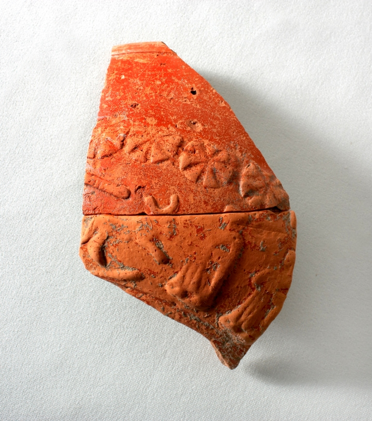
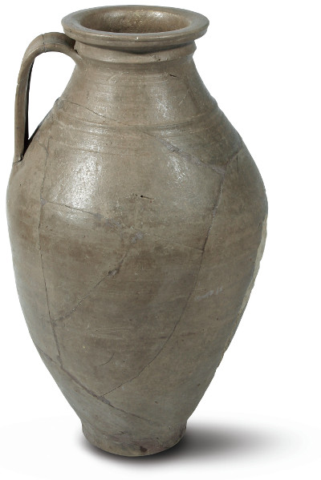

Sarmatian house half dug in the ground and ditch
Sarmatian house half dug in the ground and ditch
 Sarmatian baking oven (excavation by K. Kővári)
Sarmatian baking oven (excavation by K. Kővári)
Sarmatian colony in Gödöllő, end of the 2nd century - turn of 3rd-4th century
In Gödöllő during the excavations before the construction of TESCO, Stopshop and Lidl stores (Dózsa Gy. street - Thegze Lajos st. - Márki Sándor st.) a large-scale Sarmatian settlement was discovered in recent years (2003-2011). Their dwelling houses are regular square houses half dug in the ground, with posts on opposite sides for supporting the gable roof. Around them are storage pits, garbage pits and open-air baking and smoking ovens.
The village section can be relatively well-dated based on a large number of terra sigillata (Roman luxury pottery) fragments found here.
 Terra sigillata fragments (turn of 2nd-3rd century, Rhine region workshop)
{kind=link}
 Terra sigillata fragments (turn of 2nd-3rd century, Rhine region workshop)
Terra sigillata fragments (turn of 2nd-3rd century, Rhine region workshop)
 Árpád-era pottery edge
Árpád-era pottery edge
The decorative dishes made in the late 2nd – mid-3rd centuries could still be in use quite a few decades later. These sigillata fragments were brought here from the neighbouring Pannonia province, on one of the trade routes passing through the Danube. It was highly respected and if it broke, it was wired together and used further, since it was expensive and difficult to replace.
Local potters even copied these sigillata dishes. Half-round deep bowls and flat plates were made in both painted and grey, smooth finish. Glasses with indented sides, so-called Faltenbecher vessels were also imported here.
Besides them, pottery for everyday use, grey domestic ceramic bowls, jars, pots and containers were also discovered. Vessels with a smoothened surface were especially popular.
 Late Roman, smoothened jar (excavation by K. Kővári)
{kind=link}
There are many hand-made pots and mugs too. Accessories of domestic industry, spindle whorls, hone stones and knives were also found in the pits of the colony. The remains of consumed animals were thrown into these garbage pits. Horse, cattle bones and many dog bones, skulls and other bone pieces were brought to the surface.
Jewellery is rarely found in the sites. Unlike the enclosures of the tombs, only lost, accidentally abandoned jewels, dress connecting pins and belt buckles have been found. The small tin pendant Tin pendant (excavation by K. Kővári) and the fragment of the neck holter were found during the excavation of TESCO, and the iron buckle and the fibulae were discovered during the excavation of Lidl store. The buckle was used by the residents of one of the dug-in houses. They include Roman type knee fibula Roman knee fibula (2nd-3rd century), Great plain type crossbow fibula and the fibula with its foot bent under used by the Sarmatians. German (Quadi) costumes were characterized by arched-back bone combs Bone Comb (3rd-4th century), of which an intact copy was found in the winter of 2011 during the excavation before the construction of Lidl store.
{kind=link}
{kind=link}
{kind=link}
Excavation Report
Gödöllő, Thegze Lajos street (Pest county) Sza, Á
Phase I: Before the construction of Lidl store, the Directorate of Pest County Museums conducted a preceding excavation in Thegze Lajos street (Lot no. 6270/22 and 6270/23), Gödöllő in March 2010. There is a known archaeological site in the area: KÖH (Cultural Heritage Office) ID: 26005, MRT13/3 (manuscript), Gödöllő-Háti dűlő 33. lh. (site) During the trial excavation in 2009 the site was demarcated. According to the contract from about 8976 m2 we were allowed to excavate less than half, 3357 m2 during the preceding excavation. This site was included in the area affected by digging activities (below the building). We could not dig under the planned car parks and approach roads according to a KÖH decision of December 2009, even though the site was to be covered. During the preceding excavation 37 new objects were found and 10 more objects were fully excavated of the previous 45 objects of the trial excavation. There are three ditches that run out of the designated excavation area, they could not be completed. The objects were Sarmatian era pits, ditches, postholes, and a dug-in house.
Phase II: On the eastern side of the area excavated in the spring, in the area of the planned Lidl supermarket, at the crossroads of Thegze Lajos street - Márki Sándor street (Lot no. 6270/23) we carried out a trial and then a preceding excavation.
As a first step, we investigated the area with trial trenching as this part was already not covered by the site marked in the Topography volume. 11 archaeological objects were found in the trial trenches. The archaeological site was demarcated. The size of the site was 3570 m2 in the area concerned, which was excavated as a continuous area. During the preceding excavation, we excavated 40 archaeological objects from the Sarmatian and the Árpád era.
During the excavations of 2009-2010 a total of 125 objects were found. It turned out that the site demarcated on the basis of the field tour and previous excavations (TESCO 2003, Stop Shop 2007) still continues in the east. Now Árpád era ditches were added to the Sarmatian-era objects registered so far.
Benedek Érdi surveyor and Antal Mali restorer participated in the excavation.
28/03/2011
dr Katalin Ottományi
archaeologist, excavation team leader
Excavation Report
Gödöllő, Ottó Ferenc Street (Pest county.) Sza, Á
The Directorate of Pest County Museums conducted rescue excavations related to the construction of the Lidl supermarket in Gödöllő, at 2-4 Ottó Ferenc street (Lot no.: 6720/23) during November-December 2011. The site is registered in MRT vol. 13/3, site no. Gödöllő, Szíl-Hátti-dűlő, 10/33. Background: In 2009 and 2010 the trial and preceding excavations were conducted in the area of the planned Lidl supermarket (between Ottó F. St. - Thegze Lajos St. - Márki S. St.). Based on the objects found in the trial trenches of the trial excavation, the Museum demarcated the site, but we were only allowed to complete full excavation under the building, we could not excavate the area under the planned parking lots and the approach roads as they were to be covered according to the plans of the Investor. KÖH prescribed professional survey instead of preceding excavation for this area.
Professional survey: At the beginning of November 2011 we started the archaeological professional survey in the area of the car park and the approach roads. During the humus removal some of the objects documented during the previous trial excavation but not fully excavated and new archaeological phenomena not registered before were found. The area was enclosed and the construction work was stopped in this part. Within the scope of the survey, we cut out and documented the archaeological objects. But their amount (about 60) necessitated rescue exploration. In the area to be covered according to the contractor’s promise, in reality not only the top 30 cm humus layer was removed, but they went much deeper, so countless archaeological objects were destroyed that could have been saved if the preceding excavation could have been extended to this area too.
Rescue excavation: The object patches marked around during the survey were extracted. As a result of the full trimming of the area, further pits were found. In the framework of the excavation 3800 m2 was examined, 73 archaeological objects were extracted, of which 8 were discovered during the trial excavation, but then only their patch had been recorded. Unfortunately, there are 27 objects that were documented during the trial excavation, but now the machines went deeper while removing the humus and these objects were destroyed. Most of the discovered objects are round pits, usually flaring, deep storage pits and garbage pits. A human skeleton had been buried on top of a pit. There are larger, shapeless, clay pit complexes and a tented-roof building (workshop or dwelling house) with postholes in the middle. All from the Sarmatian Era. Very many ceramics, red painted and grey, thrown pots, hand-formed fragments were discovered. There were surprisingly many terra sigillata pot fragments of Roman import, dating back to the late 2nd century – mid-3rd century. Spindle whorls and hone stones were also found in the pits. An outstanding find is two bronze fibulae (knee fibula and fibula with its foot bent under), Sarmatian beads and a Germanic type arched-back bone comb.
There was also a small amount of Sarmatian ceramics found in the ditch system running at right angle, though similar ditches proved to be of Árpád era during the previous year's excavation. This year we found only scattered Árpád era pottery, we could not link objects to this period.
Benedek Érdi surveyor and Antal Mali restorer participated in the excavation.
04/12/2012 - Szentendre,
dr. Ottományi Katalin
Archaeologist, excavation team leader
SUMMARY
In Gödöllő before the construction of the Lidl supermarket, in the area bordered by Thegze Lajos st. - Márki S. St. - Ottó Ferenc st. the Directorate of Pest County Museums carried out several archaeological excavations (trial excavation, preceding excavation and rescue excavation). We excavated approx. 10,727 m2, i.e. a little more than 1 hectare. In total 198 archaeological objects were discovered during the excavation. Most of them are of the Sarmatian era. There are only a few ditches related to Árpád era.
Pit: 163 pieces, one containing a human skeleton
clay pit complex: 6 pieces
Posthole: 5 pieces
oven/stove: 3 pieces (one smoker, one surrounded by posts).
Half dug-in dwelling house: 4 pieces
Half dug-in small workshop: 5 pieces
ditch: 11 pieces - probably from the Árpád era, but containing only a few finds.